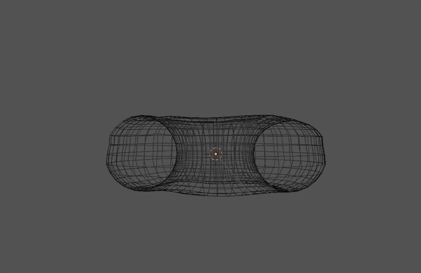
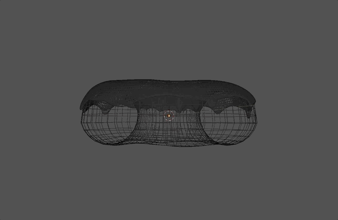
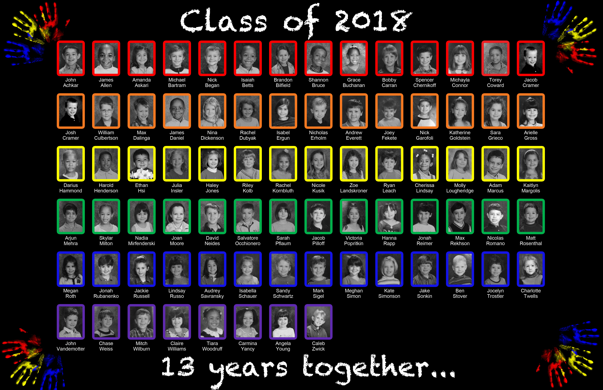

Fun Projects!
I like to have fun when I work, so I have a lot of side passion projects that I am very proud of, here are a few below!
I have always been fascinated by cartoons and animated movies/shorts and amazed by the process in which they are made. Over the last summer, I decided to teach myself Blender, a free and open source 3D creation suite. It supports the entirety of the 3D pipeline—modeling, rigging, animation, simulation, rendering, compositing and motion tracking, video editing and 2D animation pipeline. As I am still a beginner, I am working to better understand the software and what I can create with it. My donut is still in progress and below is a breakdown of the main stages.
Creating the Donut shape
Blender has shape objects the user can pick from, and one of those options is a torus, which is inheritly very similar to a donut shape, but I had to make sure the hole in the middle was the right size as well as the thickness of the torus shape. Here is my offical donut shape after morphing it.
Adding the Icing
Next was the icing. The real challenge with the icing was the drooping of the icing. It needs to look realistic so it had to drip. I had to add another mesh object the same size of the donut top, then pull it in certain directions to make it look more realistic.
Adding texture and color

I had to add color to the layers. I tried to find a medium orange yellow color for the donut base, and at hot pink icing color for the top. Also, here I added much more texture to the icing. I wanted it to be thick in some places and thinner in others to look more realistic. So you can see in the middle of the donut there is a lot of texture to represent the uneven icing.
Project Status: Work in Process
Since I started this project over the summer and most of th work has gone into me learning Blender and all of the keys and shortcuts, this project has not been completed. My next step is adding sprinkles to the donut. I use this project as an escape and love to focus on scuplting a donut with all of its imperfections.
My senior year of high school, I was chosen to create a gift for all students who attended the school since Kindergarten. I chose to design a placemat that each student would enjoy reminscing. I designed this placemat using Adobe Photoshop.
Placemat Final Product
I had to find each 13-year-club members Kindergarten picture, and compile it in a pretty way...whatevver Ill write more later
Project Status: Completed
I love art and experiencing art and each uqique pieces' meaning. I feel that there is a lot of beauty that arises from tragedy so I decided to collect images that reminded me of that, beautiful destruction. Here is my collection.
Project Status: In Progress
This is one of those projects that will never be completed to me, every time I find a picture on Pinterst or anywhere else, I add it to this mosaic.